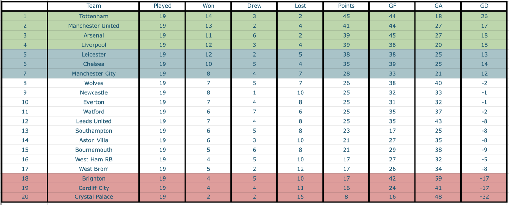
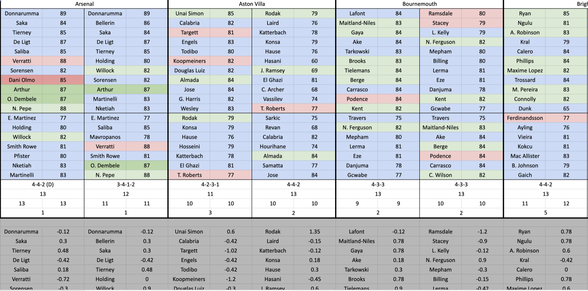

Data analyst in the San Francisco Bay Area. Ads experiments, metric validation and root-cause work at Snap, TikTok, SpaceX and Lightship. Georgia Tech M.S. Analytics, May 2027.
Personal Projects
Self-directed projects outside of work and school.
Hypothetical PL
Personal project · Apr 2019 – Mar 2020
Simulated four 38-gameweek Premier League seasons with fantasy rosters: a Python match engine I wrote fed match events into Google Sheets, where formulas turned them into league tables, scoring charts and player form that fed back into ratings. No AI was used to write the code.
Match engine. Scorelines come from probability tables chosen by the rating gap between teams, with team strength built from player FIFA ratings, a home advantage bonus and rock-paper-scissors tactics. It also simulates scorers, assists, cards, injuries, fatigue, cup ties and penalty shootouts.
Sheets. IFS, SUMIF, SORT, FILTER, QUERY and LOOKUP build results, the league table, top-scorer lists and player form across 15 tabs and a match database of about 480,000 filled cells.

League table halfway through a season, built with SUMIF and SORT.

Squad sheets. Conditional formatting shades each player red or green by recent form.
Update the engine with current EA FC player ratings, forecast the 2026–27 season over 10,000 simulations, and publish the results as an interactive dashboard (Tableau Public or a web page).
Tools: Python, Tableau
Alternative Rock Artist Survival Planned
Personal project
Question: Among artists tagged alternative rock who released their first album between 1990 and 2015, how long do they keep releasing music, and does that differ by debut decade?
The plan is to analyze MusicBrainz data with SQL in DuckDB, and use Python only for the statistical analysis.